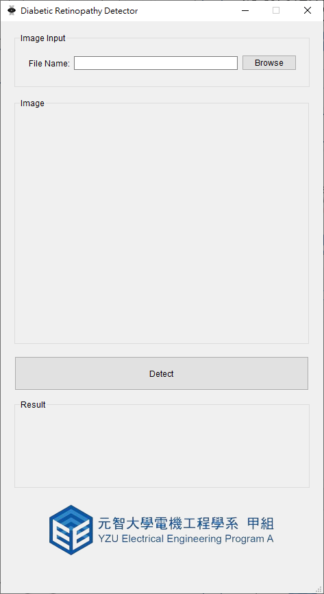
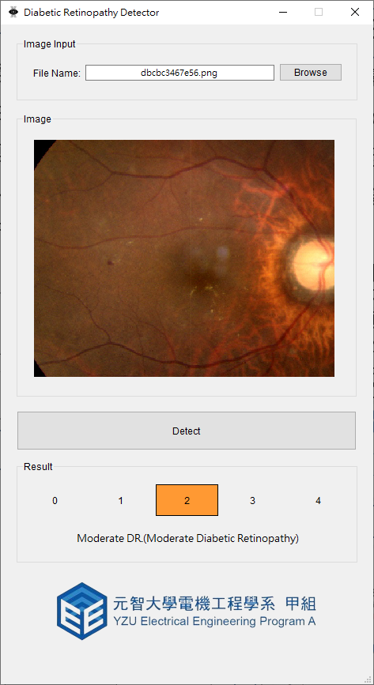

健康的眼睛
僅限微動脈瘤
微動脈瘤
視網膜內出血
大量視網膜內出血
念珠菌感染
視網膜內微血管異常增長
但沒有PDR現象
以下兩種情況之一：
新生血管形成
玻璃體/視網膜前出血
| 0-No DR | 1-Mild DR | 2-Moderate DR | 3-Severe DR | 4-Proliferative DR |
|
|
|
|
|
|
健康的眼睛 |
僅限微動脈瘤 |
微動脈瘤 視網膜內出血 |
大量視網膜內出血 念珠菌感染 視網膜內微血管異常增長 但沒有PDR現象 |
以下兩種情況之一： 新生血管形成 玻璃體/視網膜前出血 |
| 0-No DR | |
健康的眼睛 |
| 1-Mild DR | |
僅限微動脈瘤 |
| 2-Moderate DR | |
微動脈瘤 視網膜內出血 |
| 3-Severe DR | |
大量視網膜內出血 念珠菌感染 視網膜內微血管異常增長 但沒有PDR現象 |
| 4-Proliferative DR | |
以下兩種情況之一： 新生血管形成 玻璃體/視網膜前出血 |
|  |  |